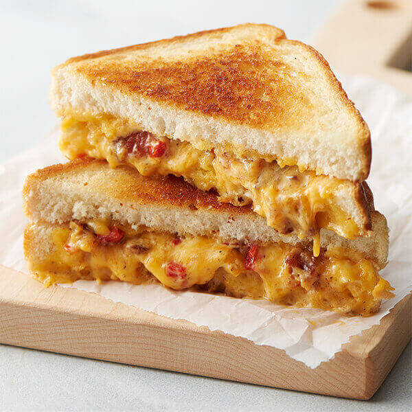

Bacon & Pimento Cheese Grilled Cheese

Grilled cheese for dinner? That's right! This final entry again comes from "LAND O' LAKES", but i think I saved the best for last here.
this grilled cheese insist of many ingredients, but the star of the show are the
tangy yet spicy Pimento cheese,
delicous pieces of chopped bacon,
and all sandiwche together between two buttery slices of texas toast bread.
this amazing sandiwch has a short prep time of 5 minutes but a much longer cook time of 35 minutes.
out of all the recipes listed, this one has the most ingredients yet its still a pretty easy recipe to follow.
what comes next is a list of ingredients follwed by a step py step instruction list on how to make this sandwich.
ingredients
PIMENTO CHEESE
- 1 cup chopped cooked bacon
- 4 ounces (1 cup) Land O Lakes® Sharp Cheddar Farmstyle Shreds
- 4 ounces cream cheese, softened
- 1/4 cup mayonnaise
- 1/4 cup diced pimientos
- 1 (3/4-inch-thick) slice Land O Lakes® Deli American, shredded
- 1 teaspoon hot sauce
- 1/4 teaspoon garlic powder
- 1/4 teaspoon onion powder
- 1/4 teaspoon pepper
Bread
- 8 slices Texas toast bread
- 8 teaspoons Land O Lakes® Butter with Canola Oil
How to make
-
Combine all Pimento Cheese ingredients in bowl; mix until well combined.
-
Spread 1 side of each bread slice with 1 teaspoon Butter with Canola Oil. Spread 1/2 cup pimento cheese mixture onto each unbuttered side of 4 bread slices. Top with remaining bread slices, buttered-side up.
-
Heat 12-inch skillet or griddle over medium heat.
-
Place sandwiches into skillet. Cook, turning once, 6-8 minutes or until golden brown and cheese is melted. Repeat with remaining sandwiches.